Tengo una página en Github, la había creado en el 2023 en un equipo diferente al que ahora estoy usando, la última vez que actualicé la página fue en octubre 2024:
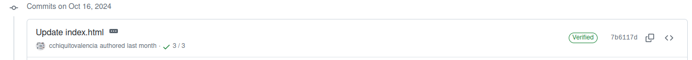
Estaba entusiasmado por retomar las publicaciones de lo que puedo compartir de mis experiencias en programación (claramente no soy un experto) para optimizar los procesos. Pero todo lo había creado en un computador que ahora no es mio.
Por cosas de la vida ahora estoy usando un computador muy antiguo, ni siquiera soportaba Windows 7, asi que, leyendo un poco, ahora esta corriendo Linux Mint. AquÍ las especificaciones:
Bash
Architecture: x86_64
CPU op-mode(s): 32-bit, 64-bit
Byte Order: Little Endian
Address sizes: 36 bits physical, 48 bits virtual
CPU(s): 2
On-line CPU(s) list: 0,1
Thread(s) per core: 1
Core(s) per socket: 2
Socket(s): 1
NUMA node(s): 1
Vendor ID: AuthenticAMD
CPU family: 20
Model: 1
Model name: AMD E-350 Processor
Stepping: 0
CPU MHz: 1595.989
CPU max MHz: 1600,0000
CPU min MHz: 800,0000
BogoMIPS: 3191.98
Virtualization: AMD-V
L1d cache: 64 KiB
L1i cache: 64 KiB
L2 cache: 1 MiB
NUMA node0 CPU(s): 0,1Como ven, antiguo. Pero funciona!
Mi tarea ahora es lograr configurar el flujo de trabajo que tenia en ese entonces en mi “nuevo” equipo.
Voy a la carpeta Documentos, creo una nueva llamada repo_cchiquitovalencia donde alojaré lo que ya había subido a Github.
Lo que hice:
En GitHub, navegué hasta la página principal del repositorio.
Encima de la lista de archivos, hice clic en Código.
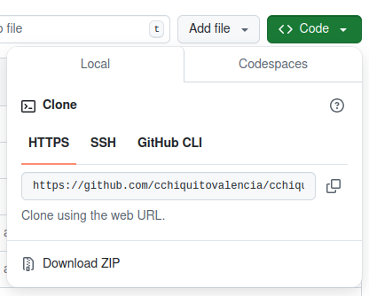
Copié la dirección URL del repositorio. Para clonar el repositorio con HTTPS, en “HTTPS”, hice clic en el ícono.
Abrí una Terminal.
Cambié el directorio de trabajo actual a la ubicación en donde quería clonar el directorio. En mi caso:
Bash
cd Documents/repo_cchiquitovalenciaEscribí
git cloney pegué la dirección URL que he copiado antes.Bash
git clone https://github.com/cchiquitovalencia/cchiquitovalencia.github.io.gitPresioné Enter para crear el clon local.
Bash
Clonando en 'cchiquitovalencia.github.io'... remote: Enumerating objects: 406, done. remote: Counting objects: 100% (406/406), done. remote: Compressing objects: 100% (249/249), done. remote: Total 406 (delta 210), reused 304 (delta 116), pack-reused 0 (from 0) Recibiendo objetos: 100% (406/406), 2.75 MiB | 3.32 MiB/s, listo. Resolviendo deltas: 100% (210/210), listo.
Listo! En este momento los archivos están en mi equipo local. Pero eso es todo, no están en seguimiento. Entonces:
Bash
~/Documents/repo_cchiquitovalencia$ git initOutput
Inicializado repositorio Git vacío en /home/cchvcpcj/Documents/repo_cchiquitovalencia/.git/Revisemos el estado:
Bash
~/Documents/repo_cchiquitovalencia$ git statusOutput
En la rama master
No hay commits todavía
Archivos sin seguimiento:
(usa "git add <archivo>..." para incluirlo a lo que se será confirmado)
cchiquitovalencia.github.io/
no hay nada agregado al commit pero hay archivos sin seguimiento presentes (usa "git add" para hacerles seguimiento)Hago lo que me dice, agrego:
Bash
~/Documents/repo_cchiquitovalencia$ git add cchiquitovalencia.github.io/Output
En la rama master
No hay commits todavía
Cambios a ser confirmados:
(usa "git rm --cached <archivo>..." para sacar del área de stage)
nuevo archivo: cchiquitovalencia.github.io/.gitignore
nuevo archivo: cchiquitovalencia.github.io/.nojekyll
... # varias líneas de código después
nuevo archivo: cchiquitovalencia.github.io/posts/_metadata.yml
nuevo archivo: cchiquitovalencia.github.io/resources.qmd
nuevo archivo: cchiquitovalencia.github.io/styles.css
nuevo archivo: cchiquitovalencia.github.io/styles.scssAhora, mientras escribo este post en un documento de Quarto dentro de una sesion de Rstudio, puedo abrir otra para revisar que todo esté en orden: poder hacer commits y push desde local a Github. Con el comando htop puedo ver la carga de mis dos súper procesadores:
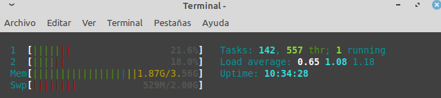
Bueno, aquí mi primer problema:
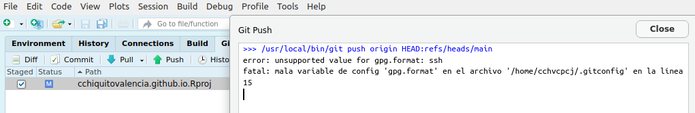
El formato ssh no tiene soporte? Como siempre, cuando hay problemas, vamos a stackoverflow: “push git unsupported gpg.format ssh”, unos blogs más tarde, la respuesta fue:
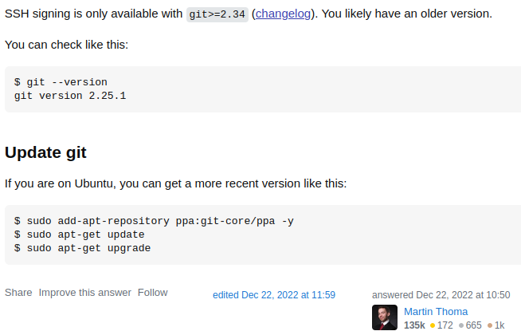
En este momento, me acordé que hace poco estaba trabajando en otro post sobre Git, y revisé la versión:
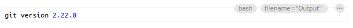
Entonces le hice caso a Martin Thoma. Miremos lo que tengo:
Bash
git config --listOutput
credential.helper=cache
credential.helper=
credential.helper=/usr/local/share/gcm-core/git-credential-manager-core
credential.credentialstore=gpg
user.name=cchiquitovalencia
user.email=cchiquito.valencia@pm.me
user.signingkey=/home/cchvcpcj/.ssh/id_ed25519.pub
credential.https://dev.azure.com.usehttppath=true
commit.gpgsign=false
gpg.format=sshLuego de modificar el .gitconfig (gpgsign = true)
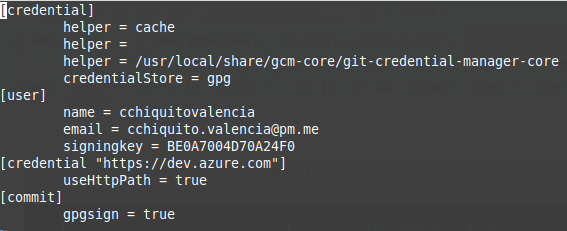
Ahora, PUSH!: y me solicita un PASSPHRASE.
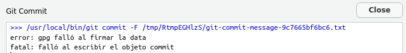
Claro que algo falló, no me acuerdo del passphrase! Luego de investigar un poco sobre como recuperar mi passphrase: puedes revisar en donde esta disponible tu llave y puedes crear el certificado de revocacion de tu llave publica, pero necesitas acordarte del passphrase!
Y luego seguí revisando otro poco más, y como no entendí nada aquí, pues me aseguré de no olvidar nunca más el passphrase.
Al final lo único que entendí fue que debía generar otra llave:
Descargué e instalé las herramientas de línea de comandos GPG para mi sistema operativo.
Puedes confirmar si tienes una versión instalada:
Bash
gpg --versionOutput
gpg (GnuPG) 2.2.19 libgcrypt 1.8.5 Copyright (C) 2019 Free Software Foundation, Inc. License GPLv3+: GNU GPL version 3 or later <https://gnu.org/licenses/gpl.html> This is free software: you are free to change and redistribute it. There is NO WARRANTY, to the extent permitted by law. Home: /home/cchvcpcj/.gnupg Supported algorithms: Pubkey: RSA, ELG, DSA, ECDH, ECDSA, EDDSA Cipher: IDEA, 3DES, CAST5, BLOWFISH, AES, AES192, AES256, TWOFISH, CAMELLIA128, CAMELLIA192, CAMELLIA256 Hash: SHA1, RIPEMD160, SHA256, SHA384, SHA512, SHA224 Compression: Uncompressed, ZIP, ZLIB, BZIP2Abrí una Terminal.
Generé un par de claves GPG. Dado que existen varias versiones de GPG, es posible que debas consultar la página de manual correspondiente para encontrar el comando de generación de claves adecuado.
Bash
gpg --full-generate-keyOutput
gpg (GnuPG) 2.2.19; Copyright (C) 2019 Free Software Foundation, Inc. This is free software: you are free to change and redistribute it. There is NO WARRANTY, to the extent permitted by law. Please select what kind of key you want: (1) RSA and RSA (default) (2) DSA and Elgamal (3) DSA (sign only) (4) RSA (sign only) (14) Existing key from card Your selection? 1 RSA keys may be between 1024 and 4096 bits long. What keysize do you want? (3072) 4096 Please specify how long the key should be valid. 0 = key does not expire <n> = key expires in n days <n>w = key expires in n weeks <n>m = key expires in n months <n>y = key expires in n years Key is valid for? (0) 0 Key does not expire at all Is this correct? (y/N) y
Finalmente genero otra llave más porque la que tenia había expirado. Qué tal que hubiera buscado maneras de aligerar la búsqueda de mi llave?, será que al final tendría que haber buscado la manera de ponerla a funcionar luego de expirar?
Output
sec rsa4096/BE0A7004D70A24F0 2022-03-23 [SC]
8D8EDF6C11646AB64D276070BE0A7004D70A24F0
uid [ultimate] cchiquitovalencia (Key to) <cchiquito.valencia@pm.me>
sec rsa4096/D0A5DB1B2962C681 2024-11-15 [SC]
6DA68EDA9FE612269D802528D0A5DB1B2962C681
uid [ultimate] cchiquitovalencia (Acceso para Github) <cchiquito.valencia@pm.me>
ssb rsa4096/F4AE44B3682F30AE 2024-11-15 [E]Es necesario registrar la llave en Github, vamos a Configuración:
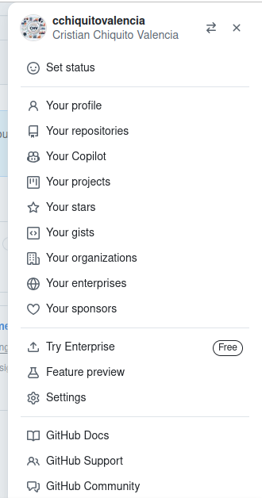
La zona de acceso
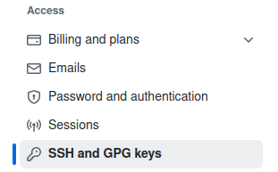
y nueva llave:
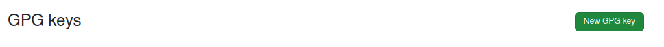
Y digitamos título y PUBLIC KEY BLOCK:
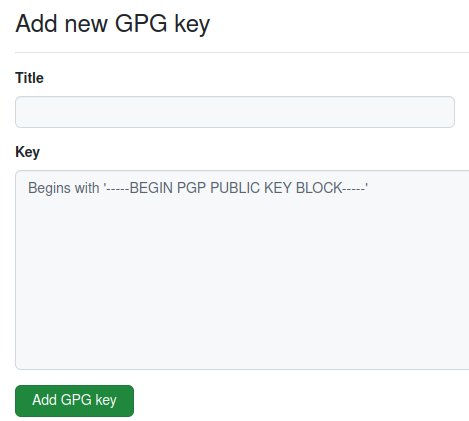
Para obtener la llave completa que debemos registrar, ejecutar en la Terminal:
Bash
gpg --armor --export D0A5DB1B2962C681Cambiando el Key ID para cada llave generada. Ahora tengo esto:
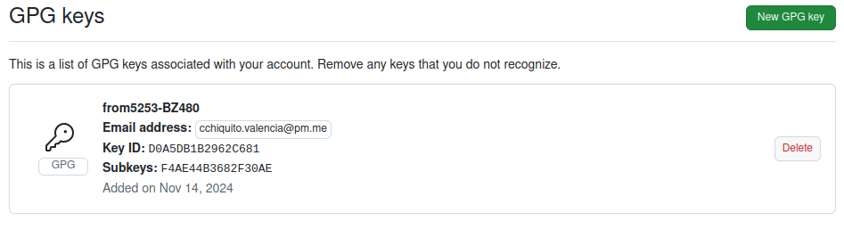
Ahora si, ya:
Cloné el repositorio que se encuentra alojado en
Githuba mi equipo local.Inicié el seguimiento con
Giten mi control de versiones al proyecto local.Actualicé mi version de Git para tener acceso son
SSH.Creé una
llave públicanueva, porque no recordaba que la anterior expiró.Registré la llave nueva a Github para realizar
PUSHdesde lo local.
Entonces creo un archivo para realizar la prueba, se llama “actualizado.qmd” y contiene lo siguiente.
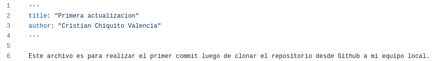
Finalmente guardo el archivo y le doy commit:
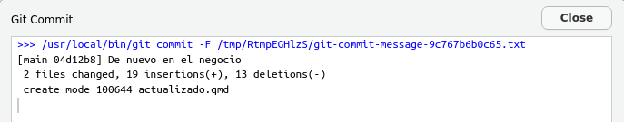
Ahora, la hora de la verdad: PUSH! No sin antes decirle a Git que cambie la llave porque al principio teniamos: user.signingkey=/home/cchvcpcj/.ssh/id_ed25519.pub
En la Terminal:
Bash
git config --global user.signingkey D0A5DB1B2962C681PUSH!!!!
Pues nada pasó a Github. De alguna manera me pide el usuario, y le digo cchiquitovalencia, luego me pide clave, pero de un correo que no tengo registado en Github. Solo tengo registrado cchiquito.valencia@pm.me, entonces pienso que algo tiene que ver con el “credential.manager”:
Bash
git-credential-manager configureOutput
bash: git-credential-manager: command not foundPues a instalarlo se dijo:
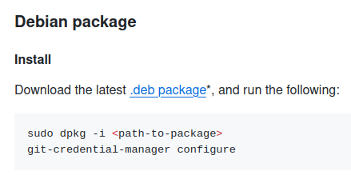
Y así:
Bash
sudo dpkg -i /home/cchvcpcj/Downloads/gcm-linux_amd64.2.6.0.debOutput
Seleccionando el paquete gcm previamente no seleccionado.
(Leyendo la base de datos ... 419408 ficheros o directorios instalados actualmente.)
Preparando para desempaquetar .../gcm-linux_amd64.2.6.0.deb ...
Desempaquetando gcm (2.6.0) ...
Configurando gcm (2.6.0) ...Ahora sí:
Bash
git-credential-manager configureOutput
Configuring component 'Git Credential Manager'...
Configuring component 'Azure Repos provider'...Reviso la configuracion:
Bash
git config --listOutput
credential.helper=cache
credential.helper=
credential.helper=/usr/local/share/gcm-core/git-credential-manager-core
credential.credentialstore=gpg
credential.cacheoptions=--timeout 300
credential.helper=
credential.helper=/usr/local/bin/git-credential-manager
user.name=cchiquitovalencia
user.email=cchiquito.valencia@pm.me
user.signingkey=D0A5DB1B2962C681
credential.https://dev.azure.com.usehttppath=true
commit.gpgsign=trueAlgunas verificaciones mas tarde, un passphrase muy bien recordado (no lo olvidaré, y me aseguré muy bien de no volver a hacerlo) y finalmente:
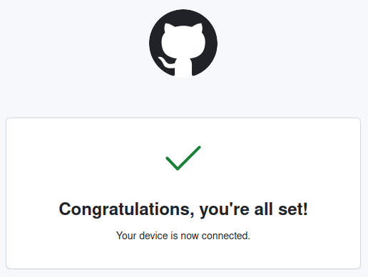
y PUSH!!!!!!!!!!
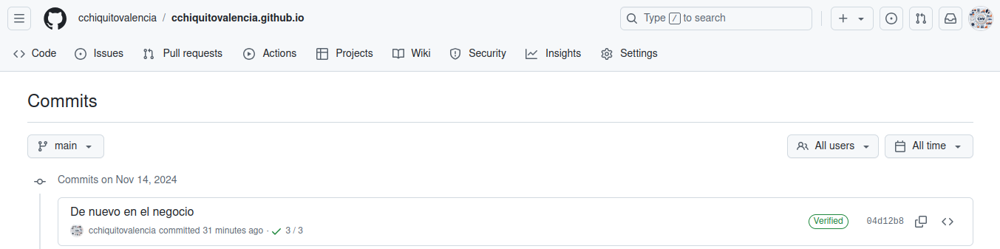
“De nuevo en el negocio.”
Citation
@online{chiquito_valencia2024,
author = {Chiquito Valencia, Cristian},
title = {Retomando Labores},
date = {2024-11-20},
url = {https://cchiquitovalencia.github.io/posts/2024-11-20-ejemplo_usarGithub/},
langid = {en}
}